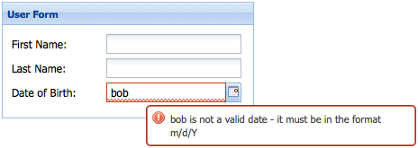

Forms
Many classes have shortcut names used when creating (instantiating) a class with a
configuration object. The shortcut name is referred to as an alias (or xtype if the
class extends Ext.Component). The alias/xtype is listed next to the class name of
applicable classes for quick reference.
Framework classes or their members may be specified as private or protected. Else,
the class / member is public. Public, protected, and private are access
descriptors used to convey how and when the class or class member should be used.
Public classes and class members are available for use by any other class or application code and may be relied upon as a stable and persistent within major product versions. Public classes and members may safely be extended via a subclass.
Protected class members are stable public members intended to be used by the
owning class or its subclasses. Protected members may safely be extended via a subclass.
Private classes and class members are used internally by the framework and are not intended to be used by application developers. Private classes and members may change or be omitted from the framework at any time without notice and should not be relied upon in application logic.
static label next to the
method name. *See Static below.Below is an example class member that we can disect to show the syntax of a class member (the lookupComponent method as viewed from the Ext.button.Button class in this case).
Let's look at each part of the member row:
lookupComponent in this example)( item ) in this example)Ext.Component in this case). This may be omitted for methods that do not
return anything other than undefined or may display as multiple possible values
separated by a forward slash / signifying that what is returned may depend on the
results of the method call (i.e. a method may return a Component if a get method calls is
successful or false if unsuccessful which would be displayed as
Ext.Component/Boolean).PROTECTED in
this example - see the Flags section below)Ext.container.Container in this example). The source
class will be displayed as a blue link if the member originates from the current class
and gray if it is inherited from an ancestor or mixed-in class.view source in the example)item : Object in the example).undefined a "Returns" section
will note the type of class or object returned and a description (Ext.Component in the
example)Available since 3.4.0 - not pictured in
the example) just after the member descriptionDefaults to: false)The API documentation uses a number of flags to further commnicate the class member's function and intent. The label may be represented by a text label, an abbreviation, or an icon.
classInstance.method1().method2().etc();false is returned from
an event handler- Indicates a framework class
- A singleton framework class. *See the singleton flag for more information
- A component-type framework class (any class within the Ext JS framework that extends Ext.Component)
- Indicates that the class, member, or guide is new in the currently viewed version
- Indicates a class member of type config
- Indicates a class member of type property
- Indicates a class member of type
method
- Indicates a class member of type event
- Indicates a class member of type
theme variable
- Indicates a class member of type
theme mixin
- Indicates that the class, member, or guide is new in the currently viewed version
Just below the class name on an API doc page is a row of buttons corresponding to the types of members owned by the current class. Each button shows a count of members by type (this count is updated as filters are applied). Clicking the button will navigate you to that member section. Hovering over the member-type button will reveal a popup menu of all members of that type for quick navigation.
Getting and setter methods that correlate to a class config option will show up in the methods section as well as in the configs section of both the API doc and the member-type menus just beneath the config they work with. The getter and setter method documentation will be found in the config row for easy reference.
Your page history is kept in localstorage and displayed (using the available real estate) just below the top title bar. By default, the only search results shown are the pages matching the product / version you're currently viewing. You can expand what is displayed by clicking on the button on the right-hand side of the history bar and choosing the "All" radio option. This will show all recent pages in the history bar for all products / versions.
Within the history config menu you will also see a listing of your recent page visits. The results are filtered by the "Current Product / Version" and "All" radio options. Clicking on the button will clear the history bar as well as the history kept in local storage.
If "All" is selected in the history config menu the checkbox option for "Show product details in the history bar" will be enabled. When checked, the product/version for each historic page will show alongside the page name in the history bar. Hovering the cursor over the page names in the history bar will also show the product/version as a tooltip.
Both API docs and guides can be searched for using the search field at the top of the page.
On API doc pages there is also a filter input field that filters the member rows using the filter string. In addition to filtering by string you can filter the class members by access level, inheritance, and read only. This is done using the checkboxes at the top of the page.
The checkbox at the bottom of the API class navigation tree filters the class list to include or exclude private classes.
Clicking on an empty search field will show your last 10 searches for quick navigation.
Each API doc page (with the exception of Javascript primitives pages) has a menu view of metadata relating to that class. This metadata view will have one or more of the following:
Ext.button.Button class has an alternate class name of Ext.Button). Alternate class
names are commonly maintained for backward compatibility.Runnable examples (Fiddles) are expanded on a page by default. You can collapse and expand example code blocks individually using the arrow on the top-left of the code block. You can also toggle the collapse state of all examples using the toggle button on the top-right of the page. The toggle-all state will be remembered between page loads.
Class members are collapsed on a page by default. You can expand and collapse members using the arrow icon on the left of the member row or globally using the expand / collapse all toggle button top-right.
Viewing the docs on narrower screens or browsers will result in a view optimized for a smaller form factor. The primary differences between the desktop and "mobile" view are:
The class source can be viewed by clicking on the class name at the top of an API doc page. The source for class members can be viewed by clicking on the "view source" link on the right-hand side of the member row.
A Form Panel is nothing more than a basic Panel with form handling abilities added. Form Panels can be used throughout an Ext application wherever there is a need to collect data from the user.
In addition, Form Panels can use any Container Layout, providing a convenient and flexible way to handle the positioning of their fields. Form Panels can also be bound to a Model, making it easy to load data from and submit data back to the server.
Under the hood a Form Panel wraps a Basic Form which handles all of its input field management, validation, submission, and form loading services. This means that many of the config options of a Basic Form can be used directly on a Form Panel.
To start off, here's how to create a simple Form that collects user data:
This Form renders itself to the document body and has three Fields - "First Name", "Last Name", and "Date of Birth". Fields are added to the Form Panel using the items configuration.
The fieldLabel configuration defines what text
will appear in the label next to the field, and the
name configuration becomes the name attribute of
the underlying HTML field.
Notice how this Form Panel has a defaultType of 'textfield'. This means that any of its items that do not have an xtype specified (the "First Name" and "Last Name" fields in this example), are Text Fields.
The "Date of Birth" field, on the other hand, has its xtype explicitly configured as
'datefield', which makes it a Date Field. Date Fields
expect to only contain valid date data and come with a
DatePicker for selecting a date.
Ext JS provides a set of standard Field types out of the box. Any of the Fields in the
Ext.form.field namespace can be used in a Form Panel. For more information see the API
documentaion for each Field type:
Ext JS has built in support for validation on any type of Field, and some Fields have built in validation rules.
For example, if a value is entered into a Date Field and
that value cannot be converted into a Date, the Field will have the
x-form-invalid-field CSS class added to its HTML element.
If necessary, this CSS class can be changed using the
invalidCls configuration. Adding the
invalidCls adds a red border to the input field (as well as a red "invalid underline"
decoration when using the Classic theme):

A Field containing invalid data will also display an error message. By default this message displays as a tool tip:

It's easy to change the location of a Field's error message using the msgTarget configuration, and the invalidText configuration changes the error message.
Each Field provides its own implementation of invalidText, and many support token
replacement in the error message.
For example, in a Date Field's invalidText, any occurrences of "{0}" will be replaced
with the Field's value, and any occurrences of "{1}" will be replaced with the required
date format.
The following code demonstrates placing the error message directly under the Field, and customizing the error message text:
{
xtype: 'datefield',
fieldLabel: 'Date of Birth',
name: 'birthDate',
msgTarget: 'under', // location of the error message
invalidText: '"{0}" bad. "{1}" good.' // custom error message text
}
Some validation requirements cannot be met using the built-in validations. The simplest way to implement a custom validation is to use the Text Field's regex configuration to apply validation rules and the maskRe configuration to limit which characters can be typed into the field. Here's an example of a Text Field that validates a time.
{
xtype: 'textfield',
fieldLabel: 'Last Login Time',
name: 'loginTime',
regex: /^([1-9]|1[0-9]):([0-5][0-9])(\s[a|p]m)$/i,
maskRe: /[\d\s:amp]/i,
invalidText: 'Not a valid time. Must be in the format "12:34 PM".'
}
While the above method works well for validating a single field, it is not practical for an application that has many fields that share the same custom validation.
The Ext.form.field.VTypes class provides a solution for creating reusable custom validations. Here's how a custom "time" validator can be created:
// custom Vtype for vtype:'time'
var timeTest = /^([1-9]|1[0-9]):([0-5][0-9])(\s[a|p]m)$/i;
Ext.apply(Ext.form.field.VTypes, {
// vtype validation function
time: function(val, field) {
return timeTest.test(val);
},
// vtype Text property: The error text to display when the validation function returns false
timeText: 'Not a valid time. Must be in the format "12:34 PM".',
// vtype Mask property: The keystroke filter mask
timeMask: /[\d\s:amp]/i
});
Once a custom validator has been created it can be used on Text Fields throughout an application using the vtype configuration:
{
fieldLabel: 'Last Login Time',
name: 'loginTime',
vtype: 'time'
}
See Validation Example for a working demo. For more information on custom validations, please refer to the API Documentation for VTypes.
The simplest way to submit data to the server is to use the url configuration of Basic Form. Since Form Panel wraps a Basic Form, we can use any of Basic Form's configuration options directly on a Form Panel:
Ext.create('Ext.form.Panel', {
...
url: 'add_user',
items: [
...
]
});
The Form's submit method can be used to submit data
to the configured url:
Ext.create('Ext.form.Panel', {
...
url: 'add_user',
items: [
...
],
buttons: [
{
text: 'Submit',
handler: function() {
var form = this.up('form'); // get the form panel
if (form.isValid()) { // make sure the form contains valid data before submitting
form.submit({
success: function(form, action) {
Ext.Msg.alert('Success', action.result.msg);
},
failure: function(form, action) {
Ext.Msg.alert('Failed', action.result.msg);
}
});
} else { // display error alert if the data is invalid
Ext.Msg.alert('Invalid Data', 'Please correct form errors.')
}
}
}
]
});
In the above example, a button is configured with a handler that handles form submission. The handler takes the following actions:
submit method is called, and two callback functions are passed -
success and failure. Within these callback functions, action.result refers to the
parsed JSON response.The above example expects a JSON response that looks something like this:
{ "success": true, "msg": "User added successfully" }
The Model class is used throughout Ext JS for representing various types of data as well as retrieving and updating data on the server. A Model representing a User would define the fields a User has as well as a proxy for loading and saving data:
Ext.define('MyApp.model.User', {
extend: 'Ext.data.Model',
fields: ['firstName', 'lastName', 'birthDate'],
proxy: {
type: 'ajax',
api: {
read: 'data/get_user',
update: 'data/update_user'
},
reader: {
type: 'json',
root: 'users'
}
}
});
Data can be loaded into a Form Panel directly from a Model using the loadRecord method:
MyApp.model.User.load(1, { // load user with ID of "1"
success: function(user) {
userForm.loadRecord(user); // when user is loaded successfully, load the data into the form
}
});
Finally, instead of using the submit method to save the data, Form Panel's updateRecord method is used to update the record with the form data, and the Model's save method is called to save the data to the server:
Ext.create('Ext.form.Panel', {
...
url: 'add_user',
items: [
...
],
buttons: [
{
text: 'Submit',
handler: function() {
var form = this.up('form'), // get the form panel
record = form.getRecord(); // get the underlying model instance
if (form.isValid()) { // make sure the form contains valid data before submitting
form.updateRecord(record); // update the record with the form data
record.save({ // save the record to the server
success: function(user) {
Ext.Msg.alert('Success', 'User saved successfully.')
},
failure: function(user) {
Ext.Msg.alert('Failure', 'Failed to save user.')
}
});
} else { // display error alert if the data is invalid
Ext.Msg.alert('Invalid Data', 'Please correct form errors.')
}
}
}
]
});
Layouts are used to handle sizing and positioning of components in an Ext JS application. Form Panels can use any Container Layout. For more information on Layouts please refer to the Layouts and Containers Guide.
For example, positioning Fields in a form horizontally can easily be done using an HBox Layout:

 Ext JS | Terms of Use
Ext JS | Terms of Use